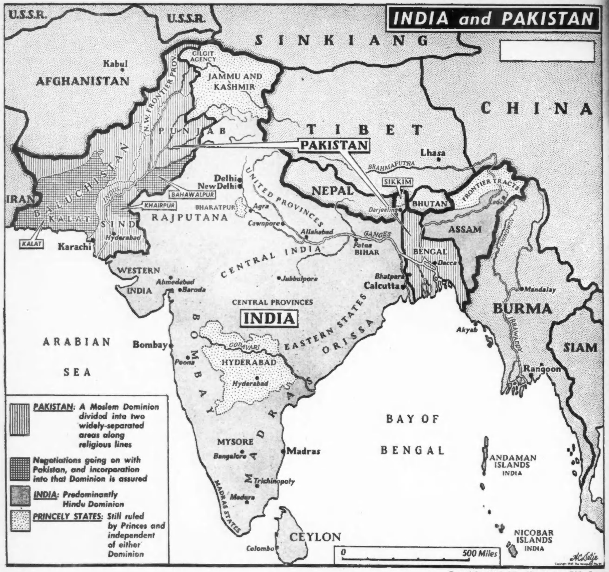

The Freeing of India
The fifteenth of August deserves to be remembered as the greatest historical date of the nineteenth and twentieth centuries. This is saying a great deal, when we remember that in the nineteenth century, Napoleon was overthrown, democracy established in England, Negro slaves emancipated in the United States, the German Empire founded, the partition of Africa determined upon, the Russian Revolution carried through, and two world wars fought. Nevertheless, it is true that the fifteenth of August marks an event of even greater significance than any of these; for on that date four hundred million colored folk of Asia were loosed from the domination of the white people of Europe.
It was not a gift nor act of grace. It was forced from the British Empire by the determination of the Indians themselves. Moreover, it was accomplished, not by blood and war, but by peace and grim determination. But for the action of one selfish man, M. A. Jinnah, originally encouraged by the English, there would have been practically no bloodshed in this vast revolution. Even as it is, the number of people killed in India by religious fanaticism during this emancipation is as nothing compared with the millions who fell in the American Civil War, in the Napoleonic Wars, and in two World Wars of Europe and America.
Indian Panorama
What is India? It is 1,500 thousand square miles of territory, with four hundred millions of people. They are mixed descendants of Negroes and Negroids; Mongolians, Western Asiatics, and Eastern Europeans. They vary in color from black to white, and they are divided religiously into one hundred and fifty million Hindus, ninety million Mohammedans, thirteen million Sikhs, Jains and Christians, and many millions of smaller groups. They speak some two hundred and twenty-two languages and dialects.
The Indians are wretchedly poor. Lajpat Rai says: “The people of India are the poorest on earth. If there existed such poverty in any other country in Europe or America, the Government would have been turned out of office.”
Sir William Hunter, one of the most candid writers and a distinguished historian of India, Director-General of Indian statistics for many years, declared that 40,000,000 of the people of India were seldom or never able to satisfy their hunger. It has been calculated that the average Indian family receives not more than twenty-five dollars a year. They are at least 75 per cent illiterate and despite sixteen universities mostly of recent growth there are only fifteen million children in school. All this has been represented as taking place despite the philanthropy of Europe, and especially of England. This is of course a gross misinterpretation of history; it stems from the literary propaganda of which Rudyard Kipling was the especial example, which has led people for decades to picture India as a great and backward country led by powerful, honest and semi-royal whites and represented by a few gorgeously caparisoned Princes with millions of dollars in jewels and income.
Early Indian Education
Rev. F.E. Keay, writing on Ancient Indian Education, 1918, says that in the past Indian education was not inferior to the education of Europe, before the Revival of Learning. Not only did the Brahman educators develop a system of education which survived the crumbling of empires and the changes of society, but they also through all these thousands of years, kept aglow the torch of higher learning, and numbered amongst them many great thinkers who have left their mark not only upon the learning of India, but upon the intellectual life of the world.
When Buddhism came, it organized and developed a system of education. The Buddhist system was very much like the Brahmanical system from which it borrowed largely. Some of the Buddhist universities were of enormous size. Their high standards of learning attracted many scholars from China, some of whom have left on record descriptions of these seats of learning. Buddhist education was by no means theological education. The study of medicine received special attention at the Buddhist universities. The Buddhist seats of learning did not shut their doors on any caste or creed. The high caste, the low caste, the Buddhist, the would-be Buddhist, the non-Buddhist were all welcome. The contribution of Buddhist monks to elementary mass education was also considerable. Because of its Buddhist monasteries, practically every male adult in Burma was literate when the British set foot there.
The history of India is a story of change and tragedy. Three or four thousand years before Christ, a black people established civilization in the valley of the Ganges and other centers. Upon them descended invaders: Mongolians, from the East; Indo-Europeans from the west: and finally the great Mohammedan incursion in the sixteenth century and later. A fine and striking primitive civilization arose in India upon the black Dravidian foundation; it had a philosophy, a social organization, a splendid art.
In India was born, five centuries before Christ, one of the greatest of the world’s religious leaders, usually depicted as black and crisp-haired, Gautama Buddha. He preached a religion of sacrifice and spiritual development. His religion spread over half of the world. From 264 to 227 B.C. arose the great Emperor Asoka whose wheel is pictured on the new flag of India. He began a golden age which lasted a thousand years. After this era, when Indian civilization was one of the greatest in the world, with the Buddhist religion in the lead, there came a series of invasions; the Mongolian horde under Timur from the east; the Mohammedans from the west; invasions all foreshadowed by the incursion of Alexander the Great 327 B.C.
In 1525 the great Moguls were reigning and the fame of their wealth and extravagance turned the attention of Europe toward India. From 1556 to 1605 reigned the great Emperor Ak-Bar and the Mohammedan empire glowed and died under his successors during the seventeenth century. By that time the attention of Europe was definitely turned toward India as a source of wealth, and in waves came the Portuguese, the Dutch, the French and finally the British. By the battle of Plassey in 1757 the English became masters of the fate of India. A great English writer Howitt tells of what the Dutch did in India:
To secure dominion they compelled the princes of Ternate and Tidore to consent to the rooting up of all the clove and nutmeg trees in the island not entirely under the jealous safeguard of Dutch keeping. For this they utterly exterminated the inhabitants of Banda, because they would not submit passively to their yoke. Their lands were divided amongst the white people, who got slaves from other islands to cultivate them. For this Malacca was besieged, its territory ravaged, and its navigation interrupted by pirates; Negapatam was twice attacked; Cochin was engaged in resisting the kings of Calicut and Travancor, and Ceylon and Java were made scenes of perpetual disturbances. These notorious dissensions have been followed by as odious oppressions, which have been practiced at Japan, China, Cambodia, Arracan on the banks of the Ganges, at Achen, Coromandel, Surat, in Persia, at Bassora, Mocha, and other places. For this they encouraged and established in Celebs a system of kidnapping the inhabitants for slaves which converted that island into a perfect hell.
English Repression
The record of the English was worse and longer:
The power, the wealth, and the patronage brought home to them by the very violation of their own wishes and maxims were of such an overwhelming and seducing nature that it was in vain to resist them. Nay, in such colours does the modern philosophy of conquest and diplomacy disguise the worst transactions between one state and another, that is it not for plain men very readily to penetrate to the naked enormity beneath.
But if there was ever one system more Machiavellian—more appropriative of the shew of justice where the basest injustice was attempted—more cold, cruel, haughty, and unrelenting than another—it is the system by which the government of the different states of India has been wrested from the hands of their respective princes and collected into the grasp of the British power.
The condition of India before the Europeans came was favorable. The historian Feroz Shah (A.D. 1351-1394) expatiates on the happy state of the peasant, the goodness of their houses and furniture, and the general use of gold and silver ornaments by their women.
The general state of the country must no doubt have been flourishing. Nicolo de Conti, who travelled about 1420 A. D., speaks highly of what he saw in Guzerat, and found the banks of the Ganges covered with towns amidst beautiful gardens and orchards, and passed four famous cities before he reached Maarazia, which he describes as a powerful city filled with gold, silver and precious stones. His accounts are corroborated by those of Barbora and Bartema, who travelled in the early part of the sixteenth century.
Abdurizag, an ambassador from the grandson of Tamerlane, visited the South of India in 1442, and concurs with other observers in giving the impression of a prosperous country. The kingdom of Kandeish was at this time in a high state of prosperity under its own Kings; the numerous stone embankments by which the streams were rendered applicable to irrigation are equal to anything in India as works of industry and ability.
Baber speaks of Hindustan “as a rich and noble country and expresses his astonishment at the swarming population and the innumerable workmen of every kind and description.” Political subjection to Europe followed in the nineteenth century.
Lajpat Rai, the great Indian martyr said:
Political subjection is the punishment of social evils and national crimes, but once imposed, it adds to their volume and intensity. It effectively checks any rejuvenation or reconstruction. It accentuates social evils and weaknesses. It leads to poverty in all its hideous forms, mental, moral and physical. If ever an awakening comes, it is delayed, or checked and crushed by all the forces of law and diplomacy, and of cunning and fraud. It is a part of the Imperial game to paint the subject people in the blackest colours, and to slander and libel them most shamelessly. The object is to produce and perpetuate the slave mentality of the subject people, and to obtain the moral sanction of the rest of the world for usurping the rights, properties and liberties of other peoples. This is the genesis of the philosophy of the white man’s burden. This is the mentality which stimulates the Empire-builder. This is the material with which the ‘steel frames’ are forged to keep the subject peoples in hand and to prevent them from doing any harm to themselves, by aspiring to and working for their freedom. That is how Britain made her Empire in India.
Howitt says:
The first step in the English friendship with the native princes, has generally been to assist them against their neighbours with troops, or to locate troops with them to protect them from aggression. For these services such enormous recompense was stipulated for, that the unwary princes, entrapped by their fears of their native foes rather than of their pretended friends, soon found that they were utterly unable to discharge them. Dreadful exactions were made of their subjects, but in vain. Whole provinces, or the revenues of them were soon obliged to be made over to their grasping friends but they did not suffice for their demands. In order to pay them their debts or their interest, the princes were obliged to borrow large sums at an extravagant rate. These sums were eagerly advanced by the English in their private and individual capacities, and securities again taken on lands or revenues. At every step the unhappy princes became more and more embarrassed, and as embarrassment increased, the claims of the company became proportionably pressing. In the technical phraseology of money-lenders, the screw was then turned, till there was no longer any enduring it.
Indian Revolts
From the middle of the eighteenth century to the middle of the nineteenth, bloody revolt and oppression was the history of this land. Revolts took place in 1758, 1775, 1782, 1790, 1805, 1814, 1817, 1823, 1837, 1844, 1850 culminating in the great mutiny of 1852. The stench of Indian misgovernment, graft, and theft at last made the British Crown take over the government from the celebrated East India Company. In 1858, India became a part of the British Empire, and in 1877 Victoria was made “Empress of India” by the great Jewish prime minister, Disraeli.
This did not stop, rather it began the inner struggle of India for freedom. Governors changed and became more liberal and tried to strive for better conditions in India; but the whole object of the British in India was still to make profit through private investment. And when the government interfered with investment, it simply meant that well-intentioned reforms did not go through. The land became monopolized by money-lenders; industry became subservient to English trade; Indian art and artisanship was driven out of the market; the peasants and laborers became poorer and poorer, and the whole country more and more ignorant. In spite of all the boasting of empire, England with her imperial might lay upon India like a blight.
The First World War brought matters to a crisis. Beginning in 1917 Great Britain tried to give India a constitution and rights, but arranged them on her own terms without allowing the Indians any voice in drawing up the new constitution. The great result of this effort was Mohandas Gandhi, the man who began his fight for freedom in South Africa in behalf of both Indians and Negroes; and who now in India began his celebrated strife for peaceful rebellion, non-cooperation and self-rule in 1920.
The great Indian Congress was organized, one of the most successful voluntary organizations of peoples without rights that the world has ever seen. It stuck together in spite of differences in religion and aim and raised the cry of home rule in 1923. The British replied with elaborate shadow-boxing and propaganda. They called conferences in London, shot down protesters in India, and jailed the leaders, so that of the people now leading India there is not a single one who has not spent months and years in jail for demanding what they now have won in political and social freedom.
Finally because of the political results and economic complications of the Second World War, Great Britain had to let go; instead of India being in debt to Great Britain, Great Britain was hopelessly in debt to India, because of the raw materials which she had to draw from her during the war. The attitude of the Indian people was such that Great Britain did not dare compulsion. Some elements had even openly fought beside the Japanese. There was and is today wide interest in Russia and in Communism.
Divided India
Various gestures were made, the first brought by Cripps was rejected by the Indians; then the renegade Jinnah, a rich land-holder raised and pressed the religious question and succeeded in temporarily dividing India on the basis of Hinduism and Mohammedanism. Out of that, among the poor and ignorant, rose fanatical fighting among neighbors who had lived in peace for centuries. But the great Indian leaders were not to be diverted or mislead. They decided wisely to accept freedom, even though it meant for the present a divided India. This division into Pakistan and the Union of India cannot stand, because Pakistan is an agricultural country, divided by the great triangle of India; unless then it can find support in Europe, which it cannot for long, it must depend upon India for industry which means that economic pressure will compel it to be one with the great sub-continent. So too the princely states will resist but succumb.

It is true that all will not go well with India. It is a difficult—a herculean task which this new nation undertakes. First of all, there are social problems; the education of a country which is vastly ignorant and needs all sorts of education; there is the health problem among a people decimated by tropical disease, malnutrition and lack of clothing and shelter.
There is above all the problem of poverty; there is going to be increasingly a fierce struggle between the great Indian capitalists representing the tuition and the capital of Europe, and the mass of workers who have been ground down to the last degree of poverty and ill-health.
All of that drama of the rights of labor, which has been fought out in Europe and America, must be begun and struggled through in India. Then of course there is the problem of religion; age-old beliefs and superstitions, exacerbated by the Jinnah political program of throwing two great religions into difficult and bitter political competition. Nothing but an India-wide crusade against religious dogma will win here in the end. It must and will be undertaken.
Finally there is the whole problem of political power: the overall power of the state, the division of powers among the provinces; the question of votes and elections, and the various law-making bodies; all this portends for India a terrible and long struggle. But there is in this new land, certain great advantages. They have a spiritual faith; a belief in the inner value of the human being as differing from and transcending the matter of wealth and material things. Indian philosophy and religion has influenced the world in this respect in the past; it will in the future. It may become dominant even over Europe, which measures everything in terms of profit.
American Negroes, particularly, have every reason to hail the new and free India. It is a freedom and autonomy of colored folk; it ends the day in a whole continent, when the white man by reason of the color of his skin, can lord it over colored people; when he can bring his segregation and his cheap habits of superiority, as shown by exclusive clubs, “jim-crow” cars and saloons and the other paraphernalia of disgraceful human degradation. The sun of the colored man has arisen in Asia as it will yet rise in Africa and America and the West Indies.